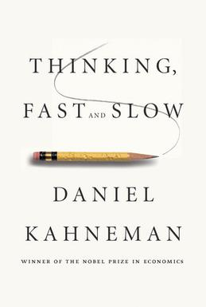

Thinking Electrons: Modelling People
“Imagine how hard physics would be if electrons could think.” — Murray Gell-Mann (1969 Nobel Laureate in Physics)
People are diverse, tending to pursue their own best interests. The following frameworks embody different approaches to model human behavior.
Rational actor model: This approach is based on rational choice theory, drawing from game theory and Adams Smith’s view of economics and treating people as homogenous goal optimizers.
Behavioral Economics: This approach is a pushback against the rational actor, using psychology to introduce diversity and limit rationality, thus offering a remedy to the rational actor model.
Rule-based: This approach simplifies the above ideas by assuming people follow the rules without deeper motives. It is advantageous to agent-based modeling.
Social Network Analysis (SNA) is a methodological approach to understanding social structures through networks and graph theory. It analyzes the relationships between individuals, groups, organizations, computers, URLs, and other connected information/knowledge entities.
Maslow’s Hierarchy of Needs is a psychological theory that prioritizes human needs into a hierarchy, suggesting that people are motivated to fulfill basic needs before moving on to other, more advanced needs.
Big Five Personality Traits (OCEAN): This model categorizes human personality into five broad dimensions: openness, Conscientiousness, Extraversion, Agreeableness, and Neuroticism. It’s widely used in psychology to understand and predict human behavior and personality.
Social Role Theory suggests that individuals’ behavior is shaped by the roles they are expected to play in society, which are shaped by societal norms and structures.
Symbolic Interactionism focuses on the meanings that people derive from social interactions and how these meanings shape individual behaviors and societal norms.
Today, we focus on the first three, but many models can mix and match different aspects of each approach. Also, many other ways exist to model people who do not fall under the above approaches.
Rational Actor model
This approach builds on the definition of making rational decisions. Embodies the assumptions of choice and game theory:
- Agents have an objective - their goal in the model.
- Given the objective, agents try to optimize their outcomes.
- Agents are rational actors.
- They are endowed with a utility function, giving them the capacity to numerically quantify and rank risks or benefits. They can impeccably rank any situation, decision, or collection of alternatives without errors or mistakes.
- Certain bounds may be placed on their rationality like:
- Incomplete information on payoffs or the game structure, strategy of other players
- Uncertainty
- Self-control bound leading to a capacity for errors (brinksmanship and the shaking hand)
- Iterated games that allow agents to adapt and learn.
- They will develop a strategy profile, which is a collection of optimal action at each juncture in a finite tree of uncertain eventualities arising from the actions of other agents. The weighted sum of utilities or profits are called payoffs at the leaf nodes of such a tree, the possible scores that rational actors people can optimize, and they help to keep track of the games’ score
It helps to distinguish between a Decision Model that depends on the agent’s actions and a Game that involves actions by other agents or the environment. It also helps to distinguish rationality from selfish behavior. Game theory first dealt with zero-sum games. These were non-cooperative scenarios like chess, which dealt in absolutes, imposing winner-takes-all rules. With the advent of Nash equilibrium, the field opened up to include a broader range of cooperative games with win-win scenarios that can model diverse team behaviors like coordination, signaling, evolution of cooperation, altruism, and social dilemmas. When there are additional players, the Core and Shapley values provide a rational way for players to form coalitions and even conspiracies in which they pool resources and allocate shared payoffs fairly.
Agents know or learn to apply different solution concepts like Minimax, Backwards Induction, Forward Induction, Nash Equilibrium, and Bayesian Equilibrium, which are formal rules that determine how a game will unfold and based on the rules, constraints, and incentives of another agent. Furthermore, rational agents may refine their solutions to eliminate pathological cases.
We can represent games in Normal form and Extensive form.
- The Extensive form of a game describes how a game unfolds in terms of action and response arranged using a tree.
- uncertainty can then be represented by assigning a probability tree with nodes for each player’s actions and the payoffs at the leaves.
- bound on the availability of information can be indicated using information sets. This also allows extensive form games to model simultaneous moves using a tree - by letting players move in turn but in ignorance of the other player’s moves.
- incomplete information—such as information about other players’ payoffs or the type of their opponents, adds an initial move by “nature,” setting these at random at the start but in a privileged information set.
- The Normal form summarizes the opposing payoffs using a contingency table for all possible action combinations. However this is the form in which it is possible to work our different equilibrium solutions.
When do humans act as rational agents?
- When stakes are high.
- When games are iterated, agents will learn and adapt more often.
- In group decisions.1.
- In simple settings.
1 disfuntional Groupthink in the context of the Bay of Pigs (the failed invasion of Castro’s Cuba in 1961) nearly lead to Armageddon
What are the merits of the rational actor model?
- It’s a benchmark to evaluate actual behavior
- Learning has a tendency to make people more rational
- Mistakes can cancel out: The average will approximate the rationale if there is no bias in the mistakes.
The rational actor model is the basis of modern economic thinking. Its centrality makes it the favorite pinata for anyone discontent with some aspect of the model or economic outcomes. While some have even received recognition and prizes, most economic thinking is fixed on treating people as rational actors. Why has the behavioral school of economics made such little impact? Because its alternatives are cumbersome mathematically, intractable computationally, and, in many cases, likely to cancel out in aggregation.
Behavioral models


Behavioral models are critical of the rational actor assumption based on evidence of actual behavior, neuroscience, and psychology. Experiments reveal systematic deviations from optimal choices, and neuroscience sheds light on how our brain structure, information processing, and thinking patterns lead us astray from rational actor predictions.
In Thinking, Fast and Slow, Daniel Kahneman @kahneman2011thinking proposes two systems of thought: fast processes driven by emotion and quick cues and slow processes that are more deliberate and rational. Fast thinking makes us susceptible to biases that the rational actor model ignores.
Cass Sunstein and Richard Thaler [@thaler2012nudge] argue that these systematic errors in human judgment have significant implications for policy design.
Four types of well-documented biases cause behavior to deviate from rational behavior:
- Prospect theory is an agent’s bias to be risk averse for profits yet risk loving for losses.
- Hyperbolic discounting is a view by agents that recent rewards are preferable to equivalent future rewards
- Status quo bias is a preference to avoid change
- Base rate bias means our current thinking influences us.
Prospect theory explains seemingly irrational gambling behavior. For example, people might choose a guaranteed $400 over a 50% chance of winning $1,000 but prefer a 50% chance of losing $1,000 over a guaranteed $400 loss.
Kahneman came up with the following example.
Suppose you have two options. You can get $400 for sure, or you get a 50% chance of winning $1,000 and a 50% chance of gaining $0. A lot of people would choose the $400 for sure. If the amounts get larger, people become more risk-averse in gains. However, when there is a choice between an inevitable loss of $400 or a loss of $1,000 at \(p(loss) = 0.5\) or a loss of $0, people are more willing to take the gamble. Both behaviors are not rational.
Hyperbolic discounting explains our preference for immediate gratification. We might choose $1,000 today over $1,005 tomorrow but prefer $1,005 in a year and a day over $1,000 in a year. This leads to the “chocolate cake” dilemma – we might plan to resist temptation in the future but succumb when faced with immediate gratification.
e.g., we tend to prefer $1000 now to $1005 tomorrow, but we tend to prefer $1005 over a year and a day to $1000 over a year. Immediate gratification matters a lot to humans. This often has what is called the chocolate cake implication. People want to be healthy, so if you are offered a chocolate cake a week from now, you are more likely to decline the offer, but if the chocolate cake is put in front of you, you are more likely to eat it. This is because fast thinking prevails.
The status quo bias explains our resistance to change. For example, people are less likely to contribute to a pension fund if they have to actively opt in, compared to having to opt out.
e.g., if people have to check a box to contribute to the pension fund, most of them won’t check the box, but if they have to check a box to not contribute to the pension fund, most of them still won’t check the box. This is because checking the box implies a change. In England, people have to check a box to donate organs, and 25% of people do so. In the rest of Europe, people have to check a box not to donate organs, and only 10% have.
The base rate bias demonstrates how our current thoughts influence our judgments. For example, if asked to estimate the manufacturing date and price of a box, the answers are often close together, as the initial number influences the subsequent estimate.
For example, when people are asked when a box is made and how much it costs, the answers are often close to each other. e.g., you may think that the box may is made in 1950 (50), and then you probably estimate price close to that number, for instance 52. This is because you were already thinking of a number, so if you have to think of another number, this number probably is close to the first number.
There are many more biases, and they are well documented. There are also criticisms. For instance, most of those biases are found in Western, Educated, Industrialised, Rich, Developed (WEIRD) countries. So, how many of them apply to other countries as well? Furthermore, people learn so that they may overcome their biases. Finally, it can be computationally difficult to account for all kinds of biases, so many models assume people are rational. One way to deal with this is to use simple rules. A more sophisticated way is to start assuming that people are rational, and then look for the biases that are relevant, and include them in the model.
Types of rules
Rule based models
Rule-based models assume people simply follow predetermined rules. For example, the Schelling model posits that individuals will relocate if the percentage of similar people in their vicinity falls below a threshold.
For example, the Schelling model presumes that people will move as soon as the percentage of similar people falls below a certain threshold. There are four types of rules-based behaviors in two dimensions. There are fixed and adaptive rules in a decision context or a game context where the payoff depends on what other people do. In a game context, a rule is often called a strategy.
- Fixed decision rules: Examples include random choice (used as a benchmark) and taking the most direct route, which may not be optimal.
An example of a fixed decision rule is random choice. Random choice, like optimal choice, can be used as a benchmark. You can compare optimal choice and random choice and see how the model behaves under those assumptions to get more understanding about what might happen and what could happen. Another example of a fixed rule is taking the most direct route, which is the route closest to the right direction. This may not be the shortest or the fastest route, so this rule may not be optimal.
Fixed strategies: Examples include dividing resources evenly and tit for tat, where cooperation is reciprocated and defection is punished. An example of a fixed strategy is divide evenly. For example, if heirs divide an asset, they might decide to divide it evenly. Another fixed strategy is tit for tat. e.g., person A starts out acting nice to person B, and he continues to act nice as long as person B acts nice, but if person B acts mean, person A will act mean too. But if person B starts acting nice again, person A will act nice too.
Tit-for-tat and grim trigger are fixed strategies represented by Moore Machines. Tit for tat starts with cooperation and only switches to defection if the other player defects, returning to cooperation when the opponent cooperates again. Grim trigger, however, permanently switches to defection after a single defection by the opponent.
Adaptive decision rules. These rules are adjusted based on feedback. Examples include the gradient-based methods, where actions are continuously adjusted in the direction of improvement, and trial-and-error approaches.
e.g., suppose that you are baking cookies, and start adding one spoon full of honey, and it turns out that the cookies are very good. The next time, try adding two spoons full of honey. If the cookies taste even better, you might add another spoonful of honey. You might go on until the cookies start to taste too sweet. Another adaptive rule is random behavior or changing what you are doing until you find something better. With regard to cookies, add raisins, chocolate, or walnuts.
Adaptive strategies. These strategies are particularly relevant in games, where adapting to others’ behavior can be advantageous. Examples include best response, where an agent chooses the optimal action given the opponent’s action, and mimicry, where successful behaviors are imitated.
When does behavior matter?
The significance of accurately modeling behavior depends on the situation. Two contrasting examples are two-sided markets and races to the bottom. In a two-sided market with buyers and sellers, the market price tends to converge towards equilibrium regardless of whether agents are rational, partially informed, or even completely uninformed. Behavior has minimal impact on the outcome.
In a race to the bottom game, where the winner is the player closest to two-thirds of the average guess, rational players will converge on a guess of zero. However, introducing biases can significantly alter the outcome, with guesses clustering around 50, 33, and 22, reflecting a mix of bias and attempts at rational calculation. Repeated play can lead to convergence towards zero as players adapt their strategies.
These examples highlight that while rational behavior serves as a valuable benchmark, incorporating biases and considering simple rules are crucial for accurate modeling. Ultimately, the importance of behavior depends on how much it affects the model’s outcome. If the impact is minimal, precise behavioral modeling might be unnecessary. However, for situations where behavior significantly influences outcomes, selecting the most appropriate model type becomes critical.
References
Note: this page is based on the following source:
- [@page2017modelthinking] MOOC, Course material & Transcripts.
- TA Notes by [@fisher2017modelthinking].
- Student notes by in [@kleinikink2016naturalmoney] and [@groh2017model].